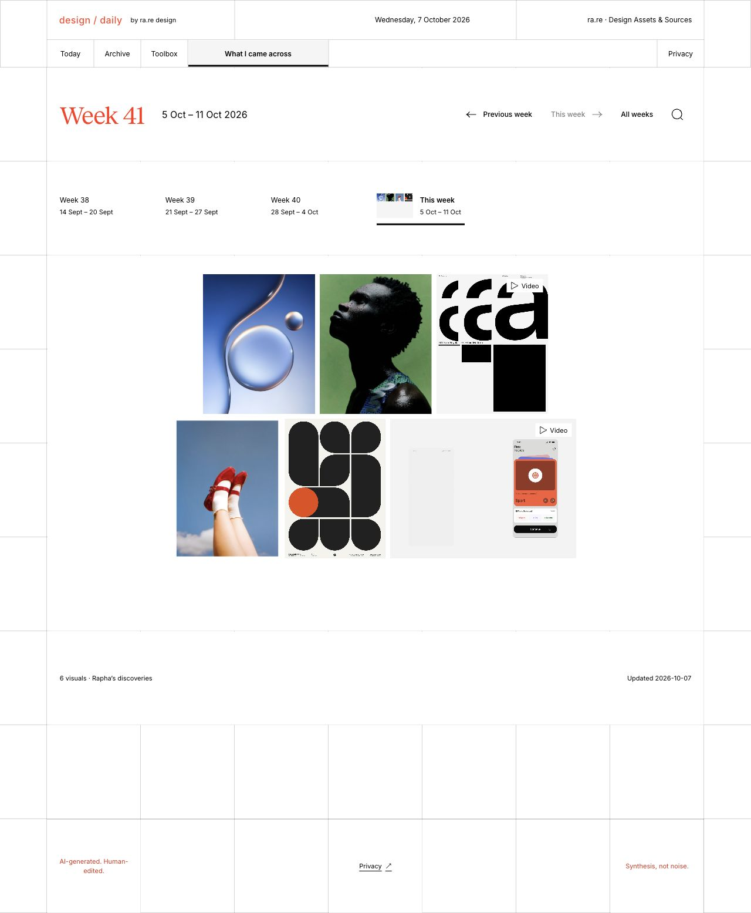

Independent product · Editorial design
design / daily · An independent design journal
A design journal that turns signals from design and AI into sourced editorial questions and a curated toolbox.

I started design / daily to give designers a way to follow what is changing across the field and trace ideas back to their sources. The journal organises each edition around questions, with an archive for earlier editions and a Toolbox for discovering tools.
I designed the editorial format and interface, then built workflows for gathering sources, preparing drafts and publishing. The editorial rules cover which sources to include, how to attribute them and how to structure an edition. Automation handles recurring steps. Editorial review shapes what makes it into an edition and why it belongs there.
The result is a working journal readers can explore by edition or through the Toolbox.

